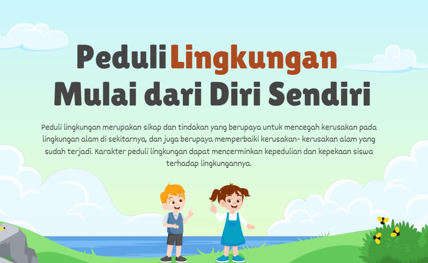

🌿 RW 07 Peduli Sampah
Komitmen kami adalah mengubah sampah rumah tangga menjadi berkah melalui edukasi digital dan praktik langsung di masyarakat. 🌱♻️
📢 Tema Sosialisasi
"Sosialisasi Pengolahan Sampah Rumah Tangga Melalui Edukasi Digital di RW 07"
Kegiatan ini bertujuan untuk meningkatkan kesadaran dan pengetahuan warga tentang pentingnya pengelolaan sampah rumah tangga yang ramah lingkungan dan berkelanjutan. 💡
Dalam sosialisasi ini, kami tidak hanya memberikan materi edukatif, tetapi juga mengajak warga untuk langsung berpartisipasi dalam praktik nyata pengolahan sampah yang bermanfaat. Materi yang kami sampaikan meliputi:
- 🧪 Pembuatan POC (Pupuk Organik Cair) dari limbah dapur yang dapat meningkatkan kesuburan tanah.
- 🍂 Pembuatan kompos dari daun kering yang mudah dilakukan di lingkungan rumah.
- 🕯️ Pembuatan lilin dari minyak jelantah sebagai alternatif produk ramah lingkungan.
- 🧱 Pembuatan paving block dari sampah plastik sebagai solusi inovatif daur ulang.
Dengan pendekatan edukatif dan praktis ini, kami berharap masyarakat RW 07 dapat menjadi pelopor dalam menerapkan prinsip zero waste di lingkungan tempat tinggal mereka. 🌱♻️
Anggota KKN Kelompok 148

Teknik Mesin
Ilmu Hukum
Agribisnis

Kesejahteraan Sosial
Informatika
Pendidikan Non Formal

Ilmu Hukum

Ilmu Perpustakaan